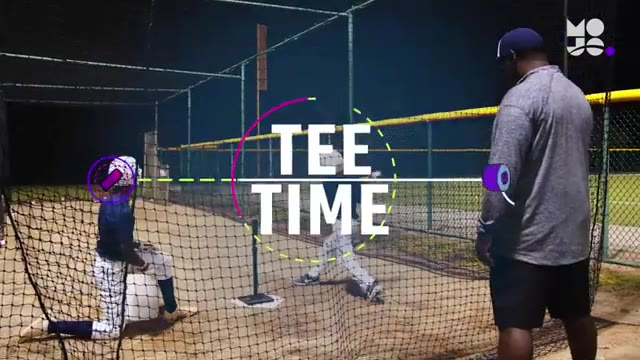
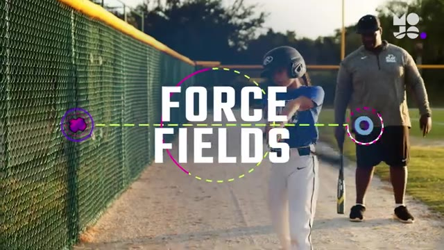
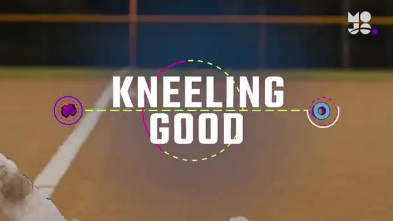
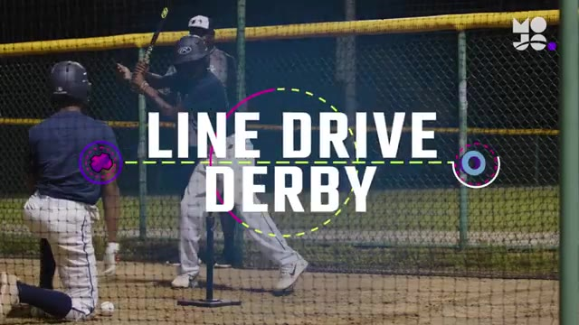
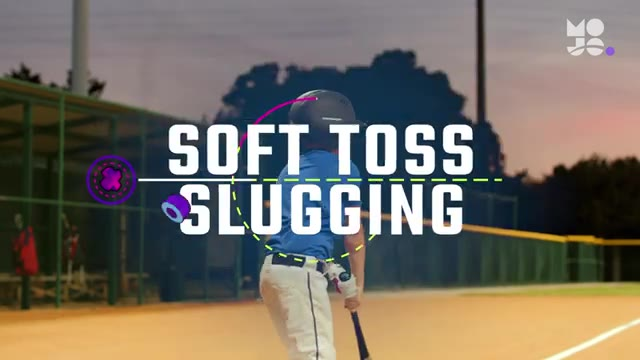
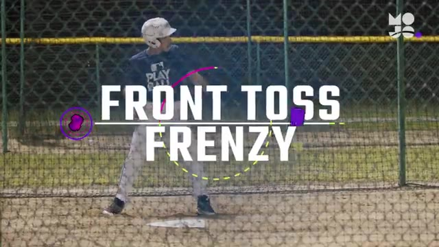
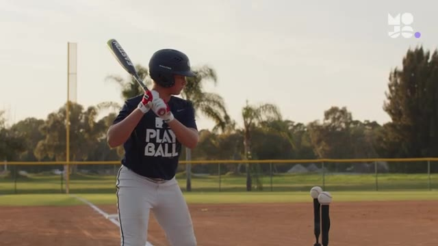
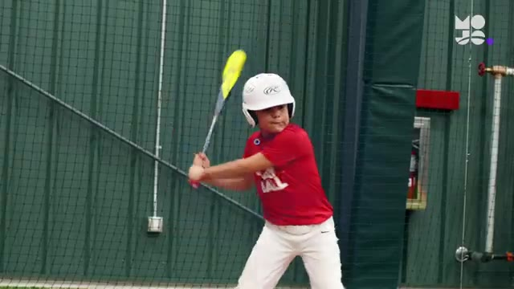
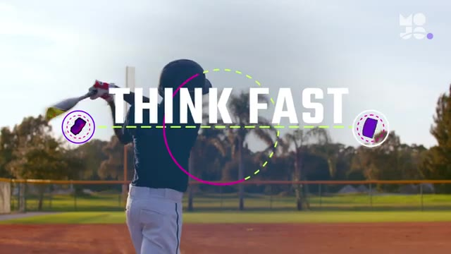

10 Best Baseball Hitting Drills for Kids | Fun Youth Baseball Drills from the MOJO App
Auto-generated from the video. Tap a row to jump · tap "Watch" on any drill to open YouTube at the exact moment.
#01 T Time
▶ Watch on YouTube · 0:14

into line drives in this game we call t time divide the group into pairs lined up outside the batting cage within each pair name a hitter and a feeder the first team steps up to the tee in the cage with their helmets on whether you're playing softball or baseball the game is the …
#02 Force Fields
▶ Watch on YouTube · 2:42

in this game we call force fields line your team up in the outfield draw three lines in the warning track dirt three five and seven feet from the wall whether you're playing softball or baseball the game is the same here's how it looks the first player in line grabs a bat and hel…
#03 Kneeling
▶ Watch on YouTube · 4:00

few rounds of this game we call kneeling good line up your team in foul territory you set up four feet to the side of the plate with a bucket of balls whether you're playing softball or baseball the game is the same here's how it looks the first player in line steps in the box wi…
#04 Line Drive Derby
▶ Watch on YouTube · 5:29

ropes in this game we call line drive derby set up two tees 10 feet apart in the batting cage divide your team into pairs and choose a hitter and a feeder within each one two pairs at a time step into the cage both wearing helmets the feeders kneel next to a bucket of balls and t…
#05 Soft Toss Slugging Soft
▶ Watch on YouTube · 6:50

mechanics in this game we call soft toss slugging soft toss hitting is a great way for players to transition from hitting off a tee to hitting a moving target it also helps more advanced players focus on specific parts of their swing you set up four feet to the side of the plate …
#06 Front Toss Frenzy
▶ Watch on YouTube · 8:02

the cage in this game we call front toss frenzy [Music] the first batter steps into the cage with a bat you set up 15 feet away behind an l screen with a bucket of balls whether you're playing softball or baseball the game is the same you underhand a ball to the hitter who takes …
#07 Inside Outside
▶ Watch on YouTube · 9:04

double the t's means double the fun in this game we call inside outside line your hitters up in foul territory and place two tees at home one in front of the inside of the plate raised to the hitter's hip another on the outside corner of the plate raised to the hitter's thigh you…
#08 Bounce Ball
▶ Watch on YouTube · 10:17

hitters develop patience and timing in this game we call bounce ball [Music] you guys are hitting one two three four five everybody else in the field to start choose a few hitters and send everyone else into the field you stand between home plate and the mound with a bucket of fo…
#09 Think Fast
▶ Watch on YouTube · 11:26

in this game we call think fast line up your team in foul territory the first player steps up to the plate with a bat you set up four feet to the side of home plate with a bucket of two different colored plastic balls whether you're playing softball or baseball the game is the sa…